OPERATORS & ASSIGNMENTS
Agenda:
- increment & decrement operators
- arithmetic operators
- string concatenation operators
- Relational operators
- Equality operators
- instanceof operators
- Bitwise operators
- Short circuit operators
- type cast operators
- assignment operator
- conditional operator
- new operator
- [ ] operator
- Precedence of java operators
- Evaluation order of java operands
- new Vs newInstance( )
- instanceof Vs isInstance( )
- ClassNotFoundException Vs NoClassDefFoundError
Increment & Decrement operators :
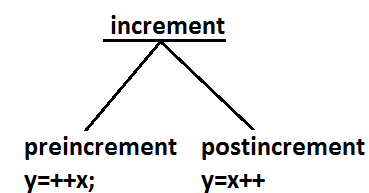
| Increment Operator | pre-increment | ex : y=++x ; |
|---|
| post-increment | ex: y=x++; |
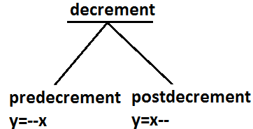
| Decrement Operator | pre-decrement | ex : y=--x ; |
|---|
| post-decrement | ex : y=x-- ; |
The following table will demonstrate the use of increment and decrement operators.
| Expression | initial value of x | value of y | final value of x |
|---|
| y=++x | 10 | 11 | 11 |
| y=x++ | 10 | 10 | 11 |
| y=--x | 10 | 9 | 9 |
| y=x-- | 10 | 10 | 9 |
Ex :
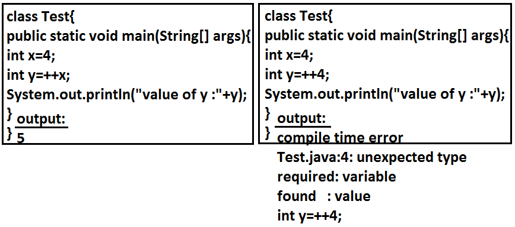
- Increment & decrement operators we can apply only for variables but not for constant values.other wise we will get compile time error .
Ex :
int x = 4;
int y = ++x;
System.out.pritnln(y); //output : 5
Ex 2 :
int x = 4;
int y = ++4;
System.out.pritnln(y);
C.E: unexpected type
required: varialbe
found : value
- We can't perform nesting of increment or decrement operator, other wise we will get compile time error

int x= 4;
int y = ++(++x);
System.out.println(y);
C.E: unexpected type
required: varialbe
found : value
- For the final variables we can't apply increment or decrement operators ,other wise we will get compile time error
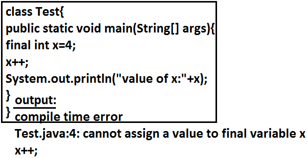
Ex:
final int x = 4;
x++; // x = x + 1
System.out.println(x);
C.E : can't assign a value to final variable 'x' .
- We can apply increment or decrement operators even for primitive data types except boolean .
Ex:
int x=10;
x++;
System.out.println(x); //output :11
char ch='a';
ch++;
System.out.println(ch); //b
double d=10.5;
d++;
System.out.println(d); //11.5
boolean b=true;
b++;
System.out.println(b);
CE : operator ++ can't be applied to boolean
Difference between b++ and b = b+1?
If we are applying any arithmetic operators b/w 2 operands 'a' & 'b' the result type is max(int , type of a , type of b)
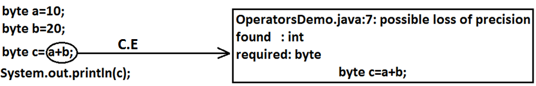
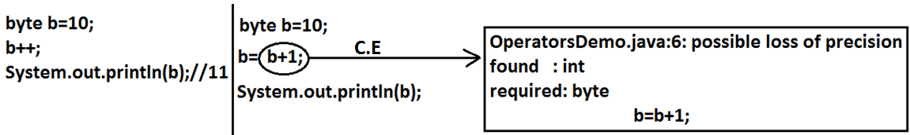
Ex 1:
byte a=10;
byte b=20;
byte c=a+b; //byte c=byte(a+b); valid
System.out.println(c);
CE : possible loss of precession
found : int
required : byte
Ex 2:
byte b=20;
byte b=b+1; //byte b=(byte)b+1 ; valid
System.out.println(c);
CE : possible loss of precession
found : int
required : byte
In the case of Increment & Decrement operators internal type casting will be performed automatically by the compiler
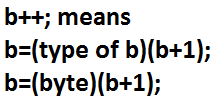
b++; => b=(type of b)b+1;
Ex:
byte b=10;
b++;
System.out.println(b); //output : 11
Arithmetic Operator :
-
If we apply any Arithmetic operation b/w 2 variables a & b ,
the result type is always max(int , type of a , type of b)
Example :
byte + byte=int
byte+short=int
short+short=int
short+long=long
double+float=double
int+double=double
char+char=int
char+int=int
char+double=double
System.out.println('a' + 'b'); // output : 195
System.out.println('a' + 1); // output : 98
System.out.println('a' + 1.2); // output : 98.2
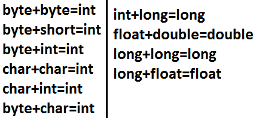
- In integral arithmetic (byte , int , short , long) there is no way to represents infinity , if infinity is the result we will get the ArithmeticException / by zero
System.out.println(10/0); // output RE : ArithmeticException / by zero
But in floating point arithmetic(float , double) there is a way represents infinity.
System.out.println(10/0.0); // output : infinity
For the Float & Double classes contains the following constants :
- POSITIVE_INFINITY
- NEGATIVE_INFINITY
Hence , if infinity is the result we won't get any ArithmeticException in floating point arithmetics
Ex :
System.out.println(10/0.0); // output : infinity
System.out.println(-10/0.0); // output : - infinity
- NaN(Not a Number) in integral arithmetic (byte , short , int , long) there is no way to represent undefine the results. Hence the result is undefined we will get ArithmericException in integral arithmetic
System.out.println(0/0); // output RE : ArithmeticException / by zero
But floating point arithmetic (float , double) there is a way to represents undefined the results .
For the Float , Double classes contains a constant NaN , Hence the result is undefined we won't get ArithmeticException in floating point arithmetics .
System.out.println(0.0/0.0); // output : NaN
System.out.println(-0.0/0.0); // output : NaN
- For any 'x' value including NaN , the following expressions returns false
// Ex : x=10;
System.out.println(10 < Float.NaN ); // false
System.out.println(10 <= Float.NaN ); // false
System.out.println(10 > Float.NaN ); // false
System.out.println(10 >= Float.NaN ); // false
System.out.println(10 == Float.NaN ); // false
System.out.println(Float.NaN == Float.NaN ); // false
System.out.println(10 != Float.NaN ); //true
System.out.println(Float.NaN != Float.NaN ); //true
- ArithmeticException :
- It is a RuntimeException but not compile time error
- It occurs only in integral arithmetic but not in floating point arithmetic.
- The only operations which cause ArithmeticException are : ' / ' and ' % '
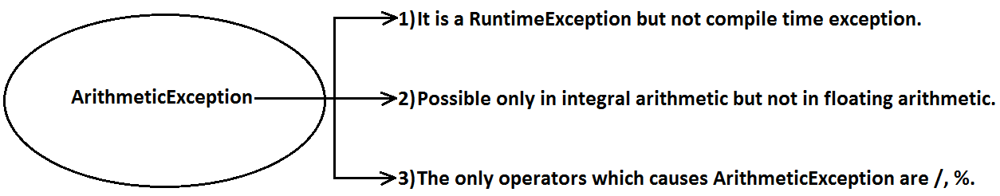
String Concatenation operator :
- The only overloaded operator in java is ' + ' operator some times it access arithmetic addition operator & some times it access String concatenation operator.
- If acts as one argument is String type , then '+' operator acts as concatenation and If both arguments are number type , then operator acts as arithmetic operator
Ex :
String a="ashok";
int b=10 , c=20 , d=30 ;
System.out.println(a+b+c+d); //output : ashok102030
System.out.println(b+c+d+a); //output : 60ashok
System.out.println(b+c+a+d); //output : 30ashok30
System.out.println(b+a+c+d); //output : 10ashok 2030
Example :
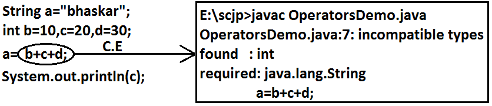
Example :
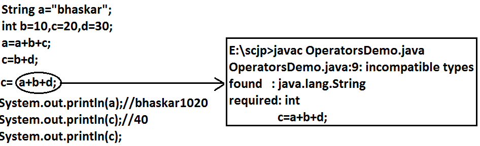
- consider the following declaration
String a="ashok";
int b=10 , c=20 , d=30 ;
Example :
a=b+c+d ;
CE : incompatible type
found : int
required : java.lang.String
Example :
a=a+b+c ; // valid
Example :
b=a+c+d ;
CE : incompatible type
found : java.lang.String
required : int
Example :
b=b+c+d ; // valid
Relational Operators(< , <= , > , >= )
- We can apply relational operators for every primitive type except boolean
.
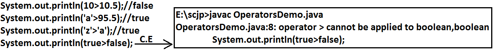
System.out.println(10 < 10.5); //true
System.out.println('a' > 100.5); //false
System.out.println('b' > 'a'); //true
System.out.println(true > false);
//CE : operator > can't be applied to boolean , boolean
- We can't apply relational operators for object types
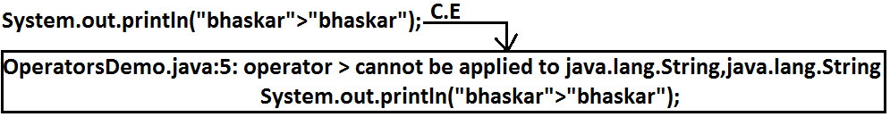
System.out.println("ashok123" > "ashok");
// CE: operator > can't be applied to java.lang.String , java.lang.String
- Nesting of relational operator is not allowed
System.out.println(10 > 20 > 30); // System.out.println(true > 30);
//CE : operator > can't be applied to boolean , int
Equality Operators : (== , !=)
- We can apply equality operators for every primitive type including boolean type also
System.out.println(10 == 20) ; //false
System.out.println('a' == 'b' ); //false
System.out.println('a' == 97.0 ) //true
System.out.println(false == false) //true
- We can apply equality operators for object types also .
For object references r1 and r2 , r1 == r2 returns true if and only if both r1 and r2 pointing to the same object. i.e., == operator meant for reference-comparision Or address-comparision.
Thread t1=new Thread( ) ;
Thread t2=new Thread( );
Thread t3=t1 ;
System.out.println(t1==t2); //false
System.out.println(t1==t3); //true
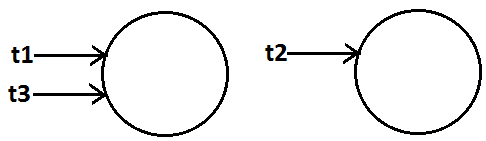
- To use the equality operators between object type compulsory these should be some relation between argument types(child to parent , parent to child) , Otherwise we will get Compiletime error incompatible types
Thread t=new Thread( ) ;
Object o=new Object( );
String s=new String("durga");
System.out.println(t ==o); //false
System.out.println(o==s); //false
System.out.println(s==t);
CE : incompatible types : java.lang.String and java.lang.Thread
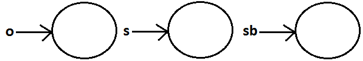
- For any object reference of on r==null is always false , but null==null is always true .
String s= new String("ashok");
System.out.println(s==null); //output : false
String s=null ;
System.out.println(r==null); //true
System.out.println(null==null); //true
- What is the difference between == operator and .equals( ) method ?
In general we can use .equals( ) for content comparision where as == operator for reference comparision
String s1=new String("ashok");
String s2=new String("ashok");
System.out.println(s1==s2); //false
System.out.println(s1.equals(s2)); //true
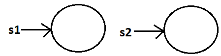
instanceof operator :
- We can use the instanceof operator to check whether the given an object is perticular type or not
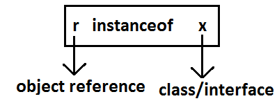
Object o=l.get(0); // l is an array name
if(o instanceof Student) {
Student s=(Student)o ;
//perform student specific operation
}
elseif(o instanceof Customer) {
Customer c=(Customer)o;
//perform Customer specific operations
}
- O instanceof X here O is object reference , X is ClassName/Interface name
Thread t = new Thread( );
System.out.println(t instanceof Thread); //true
System.out.println(t instanceof Object); //true
System.out.println(t instanceof Runnable); //true
Ex :
public class Thread extends Object implements Runnable {
}
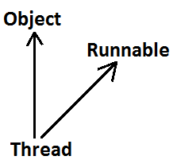
- To use instance of operator compulsory there should be some relation between argument types (either child to parent Or parent to child Or same type) Otherwise we will get compile time error saying inconvertible types
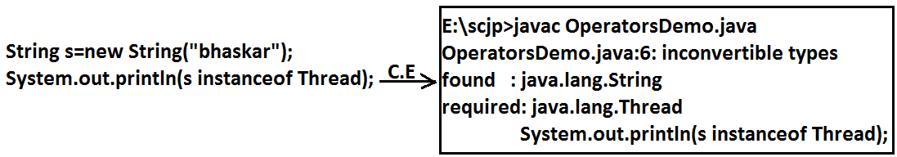
Thread t=new Thread( );
System.out.println(t instanceof String);
CE : inconvertable errors
found : java.lang.Thread
required : java.lang.String
- Whenever we are checking the parent object is child type or not by using instanceof operator that we get false.
Object o=new Object( );
System.out.println(o instanceof String ); //false
Object o=new String("ashok");
System.out.println(o instanceof String); //true
- For any class or interface X null instanceof X is always returns false
System.out.println(null instanceof X); //false
Bitwise Operators : ( & , | , ^)
- & (AND) : If both arguments are true then only result is true.
- | (OR) : if at least one argument is true. Then the result is true.
- ^ (X-OR) : if both are different arguments. Then the result is true.
Example:
System.out.println(true&false);//false
System.out.println(true|false);//true
System.out.println(true^false);//true
We can apply bitwise operators even for integral types also.
Example:
System.out.println(4&5);//4 using binary digits
System.out.println(4|5);//5 4-->100
System.out.println(4^5);//1 5-->101
Example :
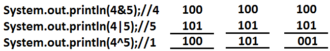
Bitwise complement (~) (tilde symbol) operator:
- We can apply this operator only for integral types but not for boolean types.
Example :
System.out.println(~true); // CE :opetator ~ can not be applied to boolean
System.out.println(~4); //-5
description about above program :
4--> 0 000.......0100 0-----+ve
~4--> 1 111.......1011 1--- -ve
2's compliment of ~4 --> 000....0100 add 1
result is : 000...0101 =5
- Note : The most significant bit access as sign bit 0 means +ve number , 1 means -ve number.
+ve number will be represented directly in memory where as -ve number will be represented in 2's comlement form.
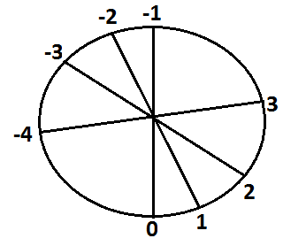
Boolean complement (!) operator:
This operator is applicable only for boolean types but not for integral types.
Example :
Example:
System.out.println(!true);//false
System.out.println(!false);//true
System.out.println(!4);//CE : operator ! can not be applied to int
Summary:
&
| Applicable for both boolean and integral types.
^
~ --------Applicable for integral types only but not for boolean types.
! --------Applicable for boolean types only but not for integral types.
Short circuit (&&, ||) operators:
These operators are exactly same as normal bitwise operators &(AND), |(OR) except the following differences.
| & , | | && , || |
|---|
| Both arguments should be evaluated always. | Second argument evaluation is optional. |
| Relatively performance is low. | Relatively performance is high. |
| Applicable for both integral and boolean types. | Applicable only for boolean types but not for integral types. |
x&&y : y will be evaluated if and only if x is true.(If x is false then y won't be evaluated i.e., If x is ture then only y will be evaluated)
x||y : y will be evaluated if and only if x is false.(If x is true then y won't be evaluated i.e., If x is false then only y will be evaluated)
Example :
int x=10 , y=15 ;
if(++x < 10 || ++y > 15) { //instead of || using &,&&, | operators
x++;
}
else {
y++;
}
System.out.println(x+"----"+y);
Output:
| operator | x | y |
|---|
| & | 11 | 17 |
| | | 12 | 16 |
| && | 11 | 16 |
| || | 12 | 16 |
Example :
int x=10 ;
if(++x < 10 && ((x/0)>10) ) {
System.out.println("Hello");
}
else {
System.out.println("Hi");
}
output : Hi
Type Cast Operator :
There are 2 types of type-casting
- implicit
- explicit
implicit type casting :
int x='a';
System.out.println(x); //97
- The compiler is responsible to perform this type casting.
- When ever we are assigning lower datatype value to higher datatype variable then implicit type cast will be performed .
- It is also known as Widening or Upcasting.
- There is no lose of information in this type casting.
- The following are various possible implicit type casting.
Diagram:
-
Example 1:
int x='a';
System.out.println(x);//97
Note: Compiler converts char to int type automatically by implicit type casting.
Example 2:
double d=10;
System.out.println(d);//10.0
Note: Compiler converts int to double type automatically by implicit type casting.
Explicit type casting:
- Programmer is responsible for this type casting.
- Whenever we are assigning bigger data type value to the smaller data type variable then explicit type casting is required.
- Also known as Narrowing or down casting.
- There may be a chance of lose of information in this type casting.
- The following are various possible conversions where explicit type casting is required.
Diagram:
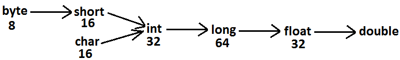
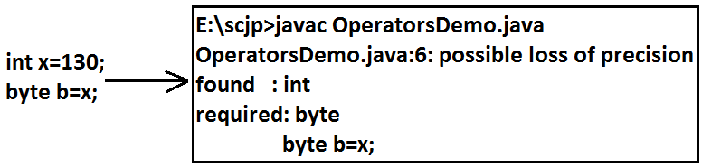
-
Example :
int x=130;
byte b=(byte)x;
System.out.println(b); //-126
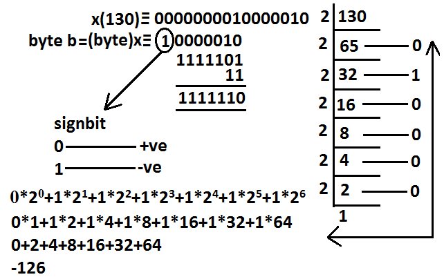
-
Example 2 :
int x=130;
byte b=x;
System.out.println(b); //CE : possible loss of precision
When ever we are assigning higher datatype value to lower datatype value variable by explicit type-casting ,the most significant bits will be lost i.e., we have considered least significant bits.
Example 3 :
int x=150;
short s=(short)x;
byte b=(byte)x;
System.out.println(s); //150
System.out.println(b); //-106
- When ever we are assigning floating point value to the integral types by explicit type casting , the digits of after decimal point will be lost .
Example 4:
double d=130.456 ;
int x=(int)d ;
System.out.println(x); //130
byte b=(byte)d ;
System.out.println(b); //-206
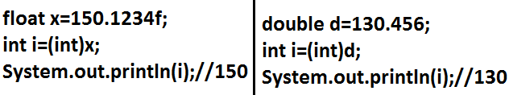
Assignment Operator :
There are 3 types of assignment operators
- Simple assignment:
Example: int x=10;
- Chained assignment:
Example:
int a,b,c,d;
a=b=c=d=20;
System.out.println(a+"---"+b+"---"+c+"---"+d);//20---20---20---20
int b , c , d ;
int a=b=c=d=20 ; //valid
We can't perform chained assignment directly at the time of declaration.
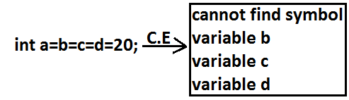
Example 2:
int a=b=c=d=30;
CE : can not find symbol
symbol : variable b
location : class Test
-
Compound assignment:
- Sometimes we can mixed assignment operator with some other operator to form compound assignment operator.
Ex:
int a=10 ;
a +=20 ;
System.out.println(a); //30
- The following is the list of all possible compound assignment operators in java.
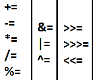
- In the case of compound assignment operator internal type casting will be performed automatically by the compiler (similar to increment and decrement operators.)
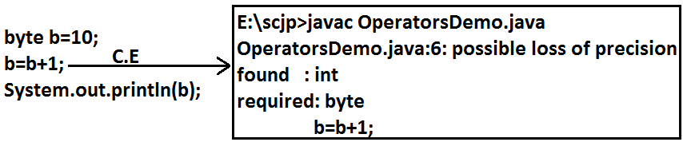
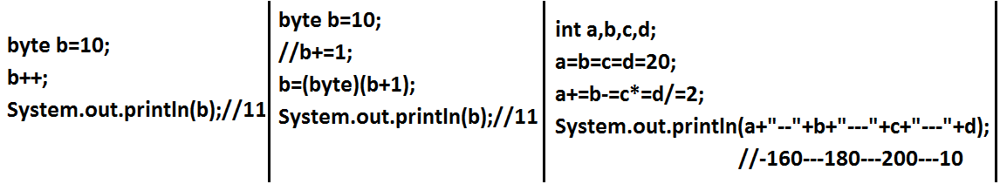
byte b=10;
b=b+1;
System.out.println(b);
CE :
possible loss of precission
found : int
required : byte
|
byte b=10;
b++;
System.out.println(b); //11
|
byte b=10;
b+=1;
System.out.println(b); //11
|
byte b=127;
b+=3;
System.out.println(b);
//-126
|
Ex :
int a , b , c , d ;
a=b=c=d=20 ;
a += b-= c *= d /= 2 ;
System.out.println(a+"---"+b+"---"+c+"---"+d);// -160...-180---200---10
Conditional Operator (? :)
The only possible ternary operator in java is conditional operator
Ex 1 :
int x=(10>20)?30:40;
System.out.println(x); //40
Ex 2 :
int x=(10>20)?30:((40>50)?60:70);
System.out.println(x); //70
Nesting of conditional operator is possible
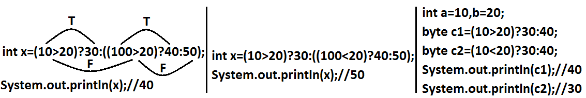
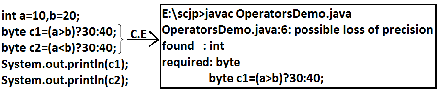
new operator :
- We can use "new" operator to create an object.
- There is no "delete" operator in java because destruction of useless objects is the responsibility of garbage collector.
[ ] operator:
We can use this operator to declare under construct/create arrays.
Java operator precedence:
- Unary operators: [] , x++ , x-- , ++x , --x , ~ , ! , new , <type>
- Arithmetic operators : * , / , % , + , - .
- Shift operators : >> , >>> , << .
- Comparision operators : <, <=,>,>=, instanceof.
- Equality operators: == , !=
- Bitwise operators: & , ^ , | .
- Short circuit operators: && , || .
- Conditional operator: (?:)
- Assignment operators: += , -= , *= , /= , %= . . .
Evaluation order of java operands: There is no precedence for operands before applying any operator all operands will be evaluated from left to right.
Example:
class OperatorsDemo {
public static void main(String[] args) {
System.out.println(m1(1)+m1(2)*m1(3)/m1(4)*m1(5)+m1(6));
}
public static int m1(int i) {
System.out.println(i);
return i;
}
}
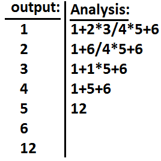
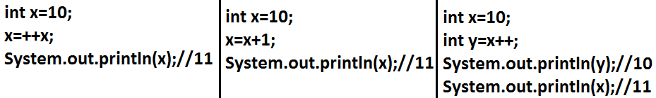
Ex 2:
int i=1;
i+=++i + i++ + ++i + i++;
System.out.println(i); //13
description :
i=i + ++i + i++ + ++i + i++ ;
i=1+2+2+4+4;
i=13;
new Vs newInstance( ) :
- new is an operator to create an objects , if we know class name at the beginning then we can create an object by using new operator .
- newInstance( ) is a method presenting class " Class " , which can be used to create object.
- If we don't know the class name at the beginning and its available dynamically Runtime then we should go for newInstance() method
public class Test {
public static void main(String[] args) Throws Exception {
Object o=Class.forName(arg[0]).newInstance( ) ;
System.out.println(o.getClass().getName( ) );
}
}
- If dynamically provide class name is not available then we will get the RuntimeException saying ClassNotFoundException
- To use newInstance( ) method compulsory corresponding class should contains no argument constructor , otherwise we will get the RuntimeException saying InstantiationException.
Difference between new and newInstance( ) :
| new | newInstance( ) |
|---|
| new is an operator , which can be used to create an object | newInstance( ) is a method , present in class Class , which can be used to create an object . |
We can use new operator if we know the class name at the beginning.
Test t= new Test( ); | We can use the newInstance( ) method , If we don't class name at the beginning and available dynamically Runtime.
Object o=Class.forName(arg[0]).newInstance( ); |
| If the corresponding .class file not available at Runtime then we will get RuntimeException saying NoClassDefFoundError , It is unchecked | If the corresponding .class file not available at Runtime then we will get RuntimeException saying ClassNotFoundException , It is checked |
| To used new operator the corresponding class not required to contain no argument constructor | To used newInstance( ) method the corresponding class should compulsory contain no argument constructor , Other wise we will get RuntimeException saying InstantiationException. |
Difference between ClassNotFoundException & NoClassDefFoundError :
-
For hard coded class names at Runtime in the corresponding .class files not available we will get NoClassDefFoundError , which is unchecked
Test t = new Test( );
In Runtime Test.class file is not available then we will get NoClassDefFoundError
-
For Dynamically provided class names at Runtime , If the corresponding .class files is not available then we will get the RuntimeException saying ClassNotFoundException
Ex : Object o=Class.forname("Test").newInstance( );
At Runtime if Test.class file not available then we will get the ClassNotFoundException , which is checked exception
Difference between instanceof and isInstance( ) :
| instanceof | isInstance( ) |
|---|
instanceof an operator which can be used to check whether the given object is perticular type or not
We know at the type at beginning it is available | isInstance( ) is a method , present in class Class , we can use isInstance( ) method to checked whether the given object is perticular type or not
We don't know at the type at beginning it is available Dynamically at Runtime. |
String s = new String("ashok");
System.out.println(s instanceof Object );
//true
If we know the type at the beginning only.
|
class Test {
public static void main(String[] args) {
Test t = new Test( ) ;
System.out.println(
Class.forName(args[0]).isInstance( ));
//arg[0] --- We don't know the type
at beginning
}
}
java Test Test //true
java Test String //false
java Test Object //true
|
int x= 10 ;
x=x++;
System.out.println(x);
//10
|
1. consider old value of x for assignment x=10
2. Increment x value x=11
3. Perform assignment with old considered x value x=10
|
|